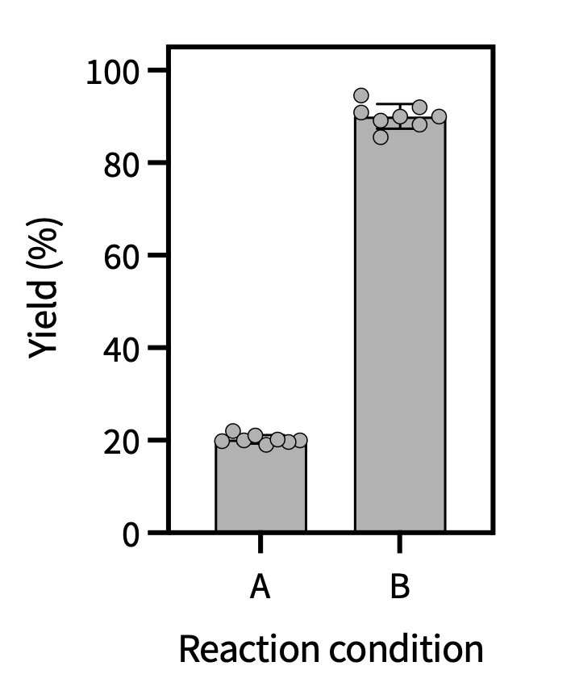
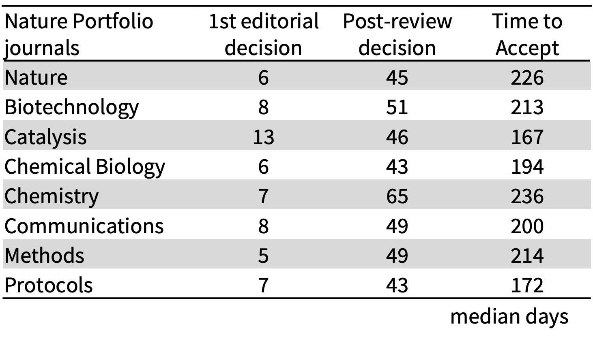
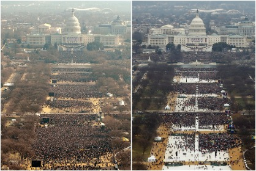
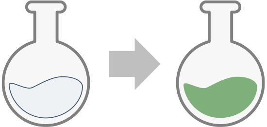
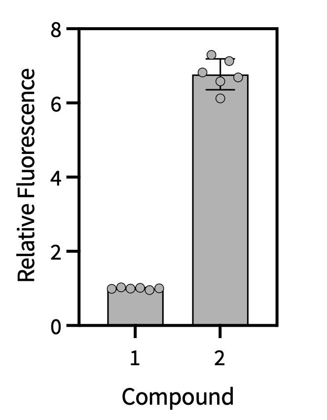
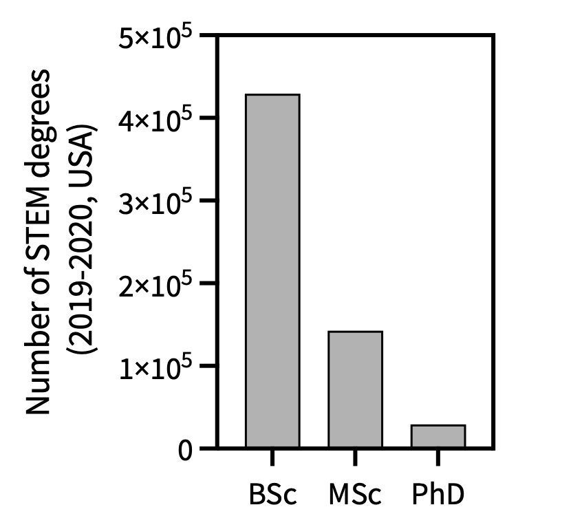
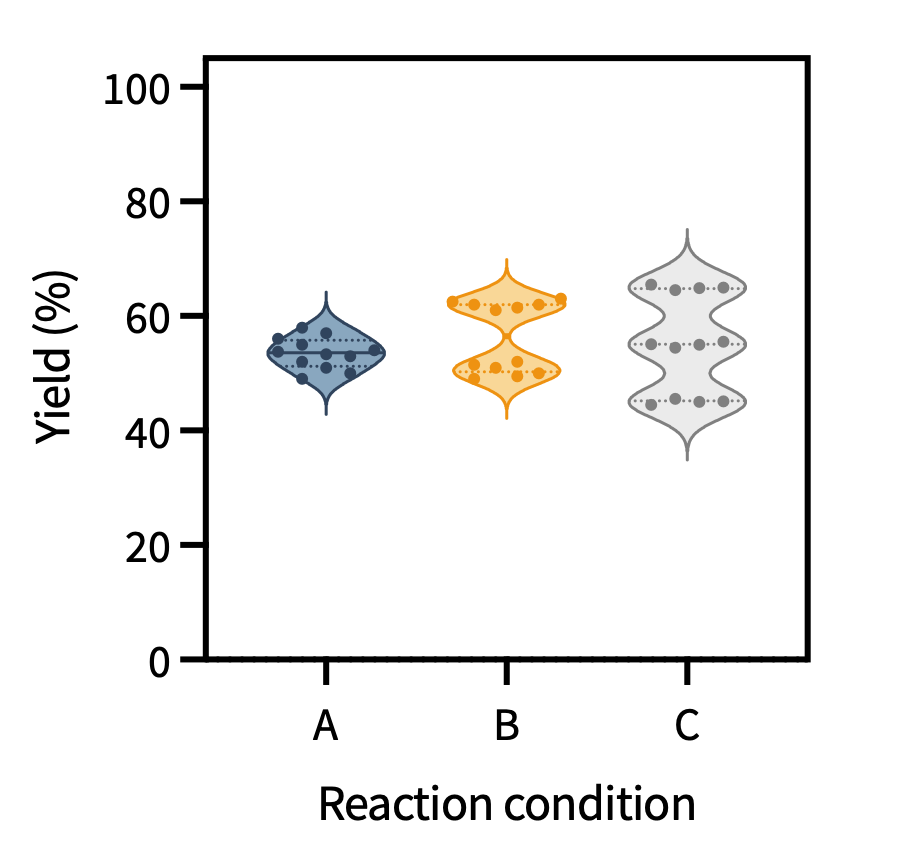
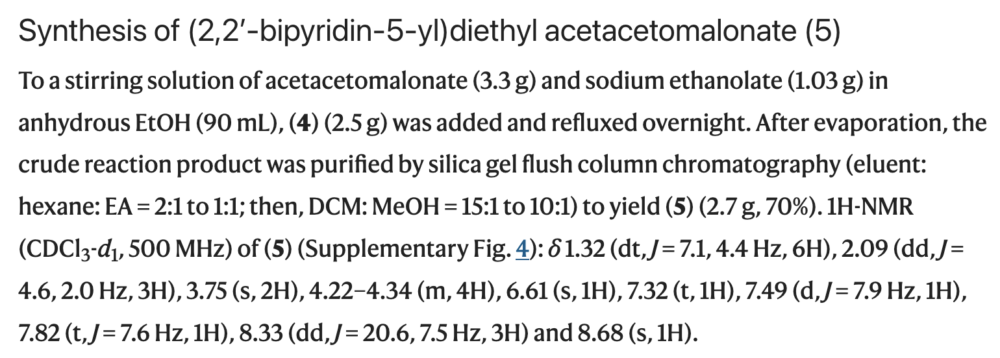
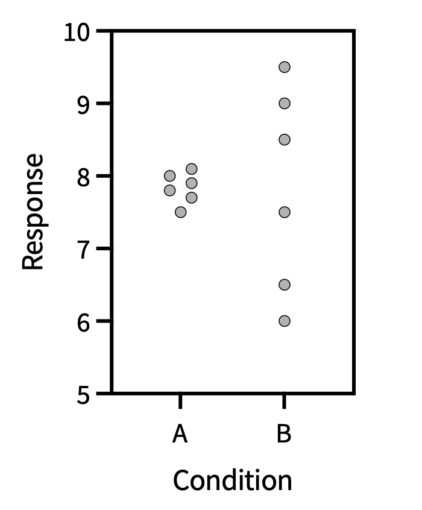

1. Introduction to Data Analytics
Introduction to Data Analytics
Welcome to Introduction to Data Analytics and Python!
Please make sure that you have read the course introduction and the pre-reading before proceeding because we are about to dive straight in!
What is Data Analytics?
Data analytics encompasses the full pipeline from designing an experiment to extracting meaning from its results. Some of the core topics are listed below.
- Experimental design — deciding what to measure, how many replicates, and what controls are needed
- Data wrangling — transforming raw data into a usable form
- Statistical analysis — summarizing and characterizing data
- Significance testing — determining whether observed differences are real
- Data modeling — fitting mathematical models to data
- Design of Experiment (DoE) — a formal framework for exploring multi-variable systems efficiently
- Chemometrics — multivariate statistical methods tailored to chemical data
- Machine learning (ML) — data-driven models that learn patterns from large datasets
Chemical Concepts Used in This Course
The examples and case studies throughout the course draw on the following chemical concepts. If any of these are unfamiliar, please review the pre-reading before proceeding.
- Percent yield of a chemical reaction
- Catalytic turnover number
- Absorbance and fluorescence
- First-order, second-order, and pseudo-first-order kinetics
- Exponential equations
- Michaelis-Menten kinetics
What Are Data?
Data are units of information — collected facts and statistics about the world. In practice, data come in many forms:
A yield analysis, counts for journal review timeline, photograph, a survey response, and a spectroscopic trace are all data. Different data types just require different handling.



Structured vs. Unstructured Data
Data can also be structured or unstructured.
Structured data is organized in a defined format (such as rows and columns), where each entry has a clear meaning (e.g. a table of reaction yields, a plate reader output). Structured data can easily be further described by several other features.
- Qualitative vs. quantitative
- Qualitative data describes a property (e.g., “the solution turned blue”). Quantitative data assigns a number to it (e.g., absorbance = 0.42 at 600 nm).


- Categorical
- Takes a fixed set of inputs that are not numerically related. Example: degree level (BSc, MSc, PhD).

- Discrete vs. continuous
-
Think of this like stairs (discrete steps) vs a ramp (continuous rise).
- Discrete data: Takes a fixed set of values. Example: number of lectures in a course, number of photons absorbed, number of people (integer values).
- Continuous data: Consists of a range of values and any number within that range. (e.g., wavelength, reaction yield).
- Distribution
- A set of measurements follows a distribution (such as unimodal, bimodal, or multimodal). Recognizing the distribution shape is important for choosing the right statistical test.

In contrast, unstructured data has no predefined format. Some examples:

Text-mining tools can convert unstructured text into structured data. For example, sentiment analysis can assign a numerical score to a written review, making it comparable across thousands of entries.
In this course, we will focus on handling structured, quantitative data that can be categorical, discrete, or continuous and be represented by different distributions.
Why Does Data Analysis Matter?
Most experimental measurements contain uncertainty. Values with uncertainty can only be interpreted with repeated experiments and proper data analysis!

In chemistry, data analysis answers questions like:
- Which reaction condition is the most robust?
- Which reaction conditions produce the highest yield?
- Which enzyme is most active, and why?
- How do bond lengths in a crystal structure correlate with function?
- How does the rate of deposition affect material performance?
- Is an analytical method sensitive enough for a given assay?
- How can complex, high-throughput datasets be handled systematically?
Data Analysis with Rigor and Integrity
There are both intentional and unintentional ways to analyze data incorrectly. Being aware of these is part of becoming a rigorous scientist (and also citizen).
Common errors and misconduct include:
- Processing data incorrectly — transforming data in ways that introduce bias
- Overfitting data — fitting a model with too many inputs that are not meaningful
- Omitting critical variables — not accounting for factors that contribute to observations
- Not performing replicates — drawing conclusions from a single measurement
- Data blocking deceptively — grouping data to hide variation
- Making misleading plots — manipulating axes, scales, or colors to exaggerate effects
- Discarding outliers deceptively — removing inconvenient points without justification
- Cherry-picking data — selecting only results that support your hypothesis
- Making up data — fabricating results entirely
This course will teach you how to avoid common, unintentional mistakes in data analysis!
It is up to each individual to avoid those that are intentional.
Getting Started in Python
Let’s switch gears a little here, so that we can get started with Python!
What is important for running code?
- An environment with the installed libraries
- A place where we can run the code
| Website | In-person | |
|---|---|---|
| environment | Pre-installed on the website, but very basic/lite | Need to create with Anaconda |
| place to run the code | “cells” on each webpage | cells in an ipynb file that we open in Visual Code Studio |
Libraries, environments, and imports
Libraries are packages of code that act as software.
Environments are isolated computing “space” in which we install libraries necessary for executing specific coding tasks.
Example: I have an environment called “DSA101” on my computer. In this environment, I have installed the libraries necessary for me to run the code in this class.
Most coding sessions require importing libraries into the code. It is best practice to run the imports cell first at the top of the code. An example of imports is shown below (not interactive).
import numpy as np
import pandas as pd
import matplotlib.pyplot as plt
import matplotlib.colors as pltcolors
import seaborn as snsNote: if an import fails, the package is likely not installed in your environment.
Let’s look at some code!
Code is made up of two things: runnable code and comments.
Comments are notes for the reader; Python ignores them entirely. Every comment starts with ‘#’.
Now that we know the difference, let’s get started with the structure of runnable code.
We have seen earlier that data have types (qualitative or quantitative; categorical, discrete, or continuous). Python mirrors this: every value you store also has a type.
Scalar Variables
A variable is a name for a stored value. The simplest variables are scalars, which have single values. In this course, we will cover four types of scalar values: integers, floats (numbers with decimal places), strings (text), and bool (True/False). Below you can see examples of each of these.
Variables are changeable, such that reassigning overwrites the previous value:
Python is case-sensitive! x and X are different variables.
Printing and f-strings
The print() function displays output. An f-string lets you embed variable values directly in text:
Controlling decimal places with f-strings
To display a float to a specific number of decimal places, use :.Nf inside the curly braces:
This :.Nf approach controls only the display, but the underlying value remains precise. This is preferred for reporting: you never lose precision in intermediate calculations, and the formatted output is always clear about how many significant figures are being shown. The round() function changes the stored value, which can cause unexpected rounding errors in subsequent calculations.
Basic Operations
String concatenation uses +:
Light coding practice
In the cell below, try write and run some short code to test your knowledge of this session.
- Can you calculate how many seconds there are in a day? in a year?
- Can you determine the percent yield of a reaction with an expected 378 mg of product (100%) for which you isolate 113 mg of product?
- Can you use an f-string to clearly output the desired information?
Want to do more or learn more operations?
Yes we will definitely do more in the future sessions, but you can also learn from reading documentation (see below)!
Reading Documentation
Getting comfortable with documentation is a core skill for this course and any coding.
Take a look at some short documentation for the function len() to see how these are usually described. Note: the description for len() ends before “class list()”.
- What can you put in the parentheses (offical term: pass to the function)?
- What is the output?
- Data analytics spans the whole pipeline: design → wrangling → statistics → modeling.
- Data are structured/unstructured and qualitative/quantitative.
- This course focuses on structured, quantitative data.
- Quantitative data can be categorical, discrete, or continuous
Next and In person session
- Make sure that you have read all of the introductory material (home page, pre-reading)!
- If you intend to come to in-person sessions, make sure that you download Anaconda and Visual Code Studio.
- Complete the anonymous questionnaire on OLAT regarding expected attendance during the first week of the course.
- If you plan to come to the in-person meeting for session 1, please access the working materials via OLAT.